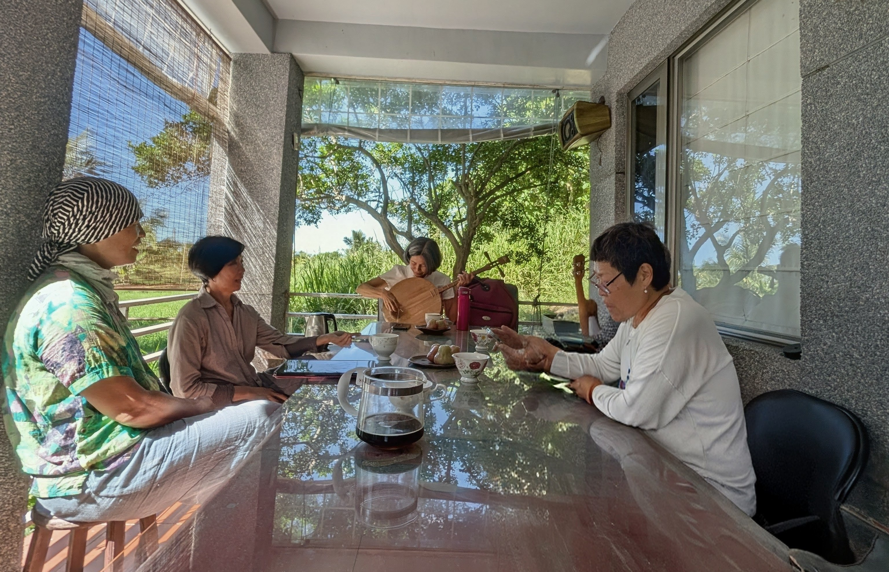
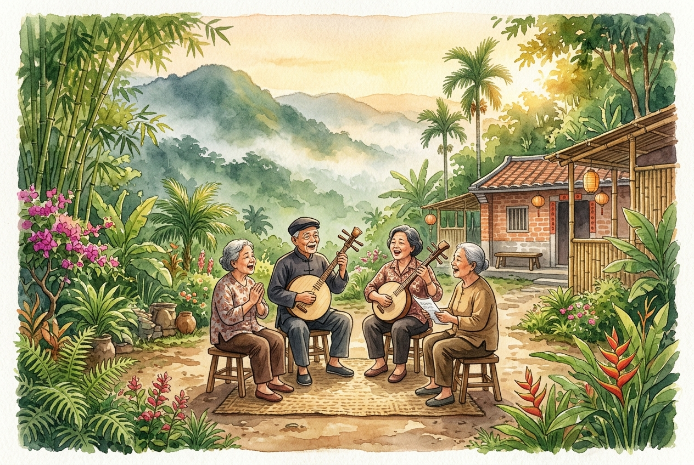

用月琴吟恆春古調
月琴傳唱與聲音採集 ｜ 美蘭 老師

大地晨光中的月琴晨會
每月第一週的週二清晨八點，就在都蘭共學堂莊園那片迎著海風的晨光裡，美蘭老師抱起一把月琴，緩緩撥出那源自恆春半島、歷經百年傳唱的古老旋律。
這不只是一堂音樂課，而是一次聲音採集的文化田野：讓旅人、學員與在地長輩共坐一起，讓古調的吟唱穿越時間，在都蘭的土地靈魂中留下一道迴響的痕跡。

▲ 晨會共唱：學員與在地長輩圍坐庭院，共同傳唱恆春民謠
每月教學紀錄
認識恆春古調：思想起
美蘭老師月琴傳唱與現場聲音採集
九月清晨的晨會時光，美蘭老師抱起月琴，細細拆解恆春最經典的調式——《思想起》。從雙弦的定弦指法、拖腔即興的氣息流轉，到學員齊聲合唱的聲音採集，真實記錄了土地與古調交織的動人瞬間。
認識恆春古調 ‧ 思想起
口傳心授的百年靈魂之聲
「思啊想枝起～」穿越時空的土地記憶
恆春民謠是台灣極具代表性的無形文化資產，早在 2009 年即列入國家級文化資產名錄。而在恆春民謠的多種曲調中，《思想起》（又稱思想枝）無疑是最具靈魂厚度與情感穿透力的傳世之作。
那聲悠長蒼茫的「思啊想枝起」起腔，隨演唱者的情緒與海風氣息自在起伏。歌詞即興創作、隨感而發，道盡先民渡海開拓的艱辛、對故土親人的深厚思念，以及在天地之間生活的深邃智慧。在美蘭老師手中那把質樸的月琴伴奏下，兩根琴弦撥動的不只是旋律，更是百年傳唱的土地溫度。
月琴雙弦伴奏
採用傳統五度相生定弦，指法樸拙自由，隨演唱者聲線即興襯托。
即興詩性歌詞
口耳相傳的四句七言形式，隨景生情、直抒胸臆，展現最純粹的民間文學。
土地聲音採集
於都蘭晨會中現場收錄吟唱，讓古調融入當代共學生活與山海記憶。
🎼 課程體驗內容
月琴體驗
親手觸摸傳統月琴，在老師引導下學習最基本的撥弦手法，感受這把圓形共鳴箱散發的溫潤音色。
古調傳唱
跟隨美蘭老師的吟唱，以口耳相傳的方式學習恆春民謠，體驗口傳文化最純粹的聲音溫度。
聲音採集
用錄音器材記錄晨會中的古調吟唱，共同為土地的聲音建立數位典藏，讓這份文化記憶不因時代流逝而消散。
「在莊園晨光中，抱起傳統月琴，吟唱悠揚的恆春民謠與古調，進行聲音採集與土地靈魂的文化對話。」
— 都蘭共學堂 ‧ 每月第一週 晨會